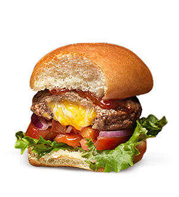
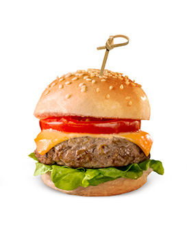
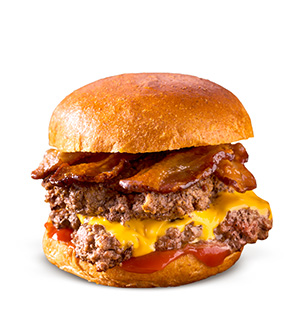

3 tendances relatives aux hamburgers
3 tendances relatives aux hamburgers

Farci
Que vous choisissiez la voie traditionnelle et que vous farcissiez le hamburger avec du fromage ou que vous le transformiez en hamburger brunch avec un œuf dans le trou, les hamburgers farcis

Petits burgers
Les mini-burgers, ou petits burgers, apparaissent sur les menus, offrant aux clients variété, taille compacte et valeur.

Écrasé
Simple mais à la mode, la galette écrasée offre des bords salés et croustillants et un centre juteux. Pour différencier votre hamburger, l’utilisation stratégique de condiments signature est
 Facteurs d’achalandage
Facteurs d’achalandage